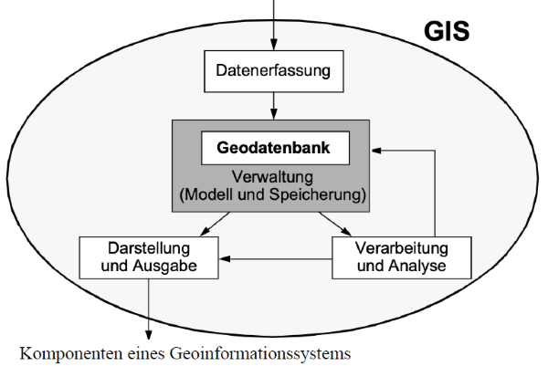
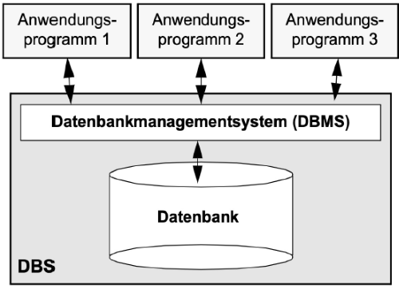
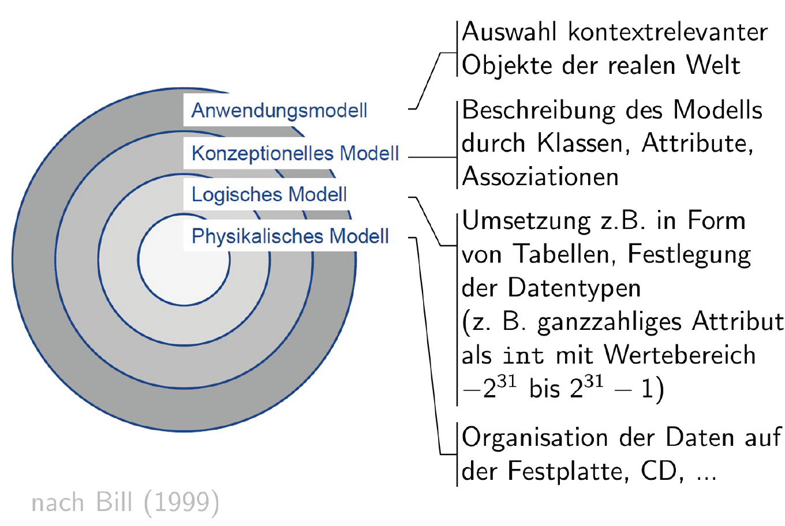

Woche 1 - Datenbanksysteme#
1-1 Geoinformationssysteme#
GIS sind Systeme zur Erfassung, Speicherung, Analyse und Darstellung von räumlichen Daten.
Hauptgeometrietypen in Geoinformationssystemen:
Vektordaten
Punkt: Einzelne Objekte wie Messstationen oder Bäume
Linie: Verbindungen wie Straßen oder Flüsse
Fläche (Polygon): Abgegrenzte Gebiete wie Seen oder Grundstücke
Rasterdaten Regelmäßige Gitterstrukturen, etwa Luftbilder, Satellitenaufnahmen oder Höhendaten

1-2 Datenbanksysteme#
Was ist eine Geodatenbank?#
Geodatenbank ist eine Datenbank, welche für die Verarbeitung von räumlichen Daten optimiert ist!
Die Datenbank (DB) ist die Sammlung einheitlich beschriebener, persistent gespeicherter Daten.
Das Datenbankmanagementsystem (DBMS) ist das Programm (Paket),
das die einheitliche Beschreibung, die sichere Verwaltung und die schnelle Abfrage der Datenbank ermöglicht.

1-2-1 Vorteile eines Datenbankmanagementsystems#
Verringerung bzw. systematische Kontrolle von Redundanzen
Konsistenzüberprüfung
Zentrale Auswertungen
Datenunabhängigkeit
Unabhängigkeit vom Betriebssystem
…
1-3 Unterschiedliche Datenmodelle#
1-3-1 Relationale Datenbanken#
Erstmals wurde das Datenmodell 1970 von Edgar F. Codd (brit. Mathematiker bei IBM) vorgeschlagen.
Tabellenbasiertes relationales Datenbankmodell.
Eine Relation ist eine Beziehung, die zwischen zwei Dingen bestehen kann.
Etablierter Standard für Datenbanken.
Zum Abfragen und Manipulieren von Daten wird die Datenbanksprache SQL (Structured Query Language) eingesetzt.
Beispiele:
MySQL
SQLite
MS SQL Server
DB2 (IBM)
Beispieltabellen für eine Veranstaltung:
Die Tabelle
showenthält Informationen zur Veranstaltung.Der Veranstaltungsort ist in der Tabelle
venuehinterlegt.In der Tabelle
geometryliegen die Geometrien der Plätze auf dem Veranstaltungsgelände.Die Verknüpfung der Veranstaltung mit Plätzen erfolgt über
show_geometry(n:m-Beziehung).Die Tabelle
personspeichert Personal, Helfer, Offizielle inkl. Zugangsdaten und -rechten.Aufgaben (Ordner, Wertungsrichter, …) werden in der Tabelle
jobabgelegt.Die Verknüpfung zwischen Veranstaltung, Person und Aufgabe wird in
show_person_jobrealisiert (ebenfalls n:m-Beziehung).
1-3-2 Objektorientierte Datenbanken#
Daten werden als Objekte im Sinne der Objektorientierung verwaltet.
Geringe Verbreitung.
Beispiele: db4o
1-3-3 Objektrelationale Datenbanken#
Bindeglied zwischen relationalen und objektorientierten Datenbanken.
Beispiele: PostgreSQL, Oracle Database
1-3-4 Dokumentenorientierte Datenbanken#
Dokumente bilden die Grundeinheit zur Speicherung der Daten.
Kein festes Schema nötig.
Speicherung strukturierter Daten (JSON, XML) und auch Binary Large Objects (Bilder, Videos).
Beispiele: Lotus Notes, CouchDB, MongoDB
1-3-5 NoSQL-Datenbanken#
“Not only SQL”
Können verschiedene Datenmodelle beinhalten:
Key/Value-basiert
Dokumentenbasiert
Spaltenorientiert
Graphenorientiert
1-4 Begriffe des relationalen Datenbankmodells#
Relationaler Begriff |
Alternativen |
|---|---|
Relation (relation) |
Tabelle (table) |
Tupel (tuple) |
Zeile (row), Datensatz (record) |
Attribut (attribute) |
Spalte (column), Feld (field) |
Datei (file) |
|
Klasse (class) |
Objekt (object) |
Eine klare Abgrenzung der Begriffe gibt es häufig nicht.
Beispiel: Eine Zeile einer Tabelle wird oft auch als Datensatz bezeichnet.
Die Summe aller Strukturinformationen (Tabellen, Schlüssel, Beziehungen, Indizes, …) wird als Datenbankschema bezeichnet.
Metadaten beschreiben die Struktur der tatsächlichen Daten.
1-5 Aufgaben eines DBMS#
Datenintegration#
Daten werden als Tupel in Relationen dargestellt.
Relationen sind durch das Datenbankschema beschrieben.
Auch Metadaten im Systemkatalog werden relational dargestellt.
Abfrage- und Datenbearbeitungssprache#
Das DBMS stellt eine Sprache zur Verfügung: Data Manipulation Language (DML).
SQL bietet Befehle wie
INSERT,SELECT,UPDATEundDELETE.Data Retrieval Language (DRL) bzw. Data Query Language (DQL) für SELECT-Anfragen.
Schema-Verwaltung#
Datenbankschema wird im Systemkatalog verwaltet.
Anlegen und Ändern über Data Description Language (DDL) (
CREATE DATABASE,CREATE SCHEMAin SQL).
Datenschutz#
Regelung von Zugriffsrechten.
Verwaltung über Data Control Language (DCL) mit
GRANTundREVOKE.
Mehrbenutzerbetrieb#
Datenbanken können von mehreren Benutzern gleichzeitig verwendet werden.
Synchronisation der Transaktionen gewährleistet.
Konsistenzerhaltung#
Konsistente Daten = widerspruchsfreie Daten.
Bedingungen sichern Konsistenz (z.B. durch Normalisierung).
Transaktionen#
Atomare Einheiten: vollständig oder gar nicht ausgeführt.
Bei Abbruch: Rückführung in den Zustand vor der Transaktion (Rollback).
Datensicherung#
Systemausfälle führen zu Inkonsistenzen.
Das DBMS sorgt dafür, dass die Daten wieder in einen konsistenten Zustand gebracht werden.
1-6 Modellierung räumlicher Daten#
Eine zentrale Grafik zur Modellierung räumlicher Daten aus dem GIS-Kontext – basierend auf Bill (1999). Sie zeigt die verschiedenen Abstraktionsebenen von der realen Welt bis zur Speicherung in einem Computersystem.

1-6-1 Anwendungsmodell#
Fragestellung: Welche Objekte der realen Welt sind für die Anwendung relevant?
Auswahl kontextrelevanter Objekte der realen Welt
Beispiel: Straßen, Gebäude, Flüsse, Grundstücke
1-6-2 Konzeptionelles Modell#
Fragestellung: Wie werden die relevanten Objekte abstrakt beschrieben?
Beschreibung des Modells durch:
Klassen (z. B. Gebäude, Straße)
Attribute (z. B. Höhe, Nutzung)
Assoziationen (z. B. „liegt an“, „gehört zu“)
Ergebnis ist häufig ein UML-Diagramm
1-6-3 Logisches Modell#
Fragestellung: Wie wird das konzeptionelle Modell technisch umgesetzt?
Umsetzung z. B. in Tabellenstrukturen
Festlegung von Datentypen:
z. B.
int,float,textAttribut “Höhe” als
intmit Wertebereich von −2³¹ bis 2³¹−1
1-6-4 Physikalisches Modell#
Fragestellung: Wie und wo werden die Daten gespeichert?
Organisation der Daten auf Speichermedien:
Festplatte, SSD, CD, Cloudspeicher etc.
Berücksichtigt Zugriffszeiten, Speicherformate, Indizes